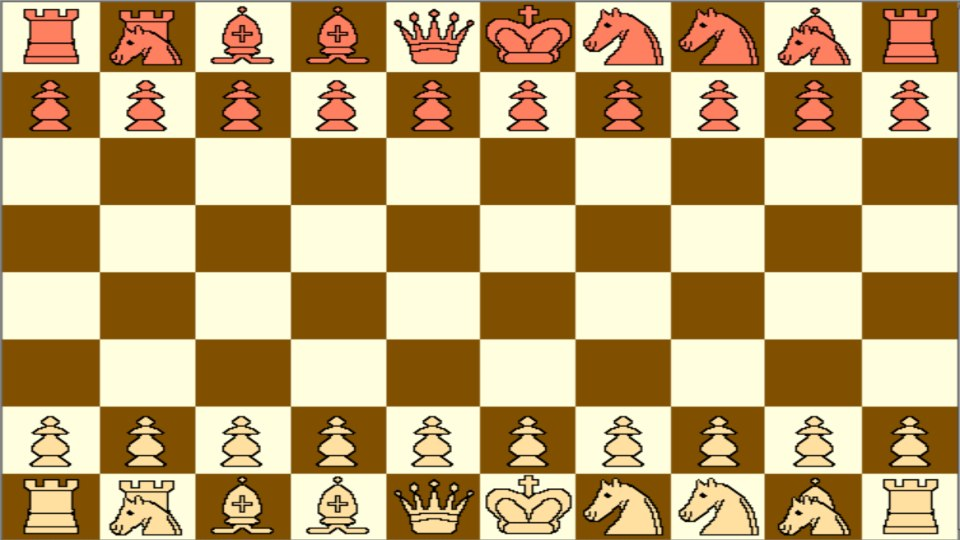

Sam Trenholme’s blog

New Capablanca Setup
December 31, 2025
I end 2025 by looking at a possible chess variant.Mongredien Carrera Chess

Mongredien Carrera Chess
Capablance Chess (or Knighted Chess) is a series of variants, usually on 8x10 boards, where two fairy pieces are added:
-
A piece that moves like a knight and bishop
-
A piece that moves like a knight and rook
There has been a lot of debate about which opening setup is the best one. The problem with Capablanca Chess is that the more powerful pieces give White a considerable advantage, and offsetting this is difficult.
Back in 2006, I came up with a Capablanca opening setup which is remarkably balanced. Since then, computer chess variant play has become a lot stronger.
Looking at Capablanca variants again, I tried out a Capablance version of Mongredien Chess. Mongredien Chess is a variant where we swap the queen side knight with the king side bishop; in other words, we swap the B file knight with the F file bishop, resulting in an opening setup where the queenside has two bishops, and the kingside has two knights. This setup is Fischer Random Setup #692.
I observed that White has less of an advantage in this setup compared to the standard Chess opening setup, so I put a version of this setup in Capablanca Chess and analyzed the resulting starting position.
What I got is a position where White’s advantage is minimized. While further analysis is needed, this looks to be a game where draws are less common than they are in standard Chess, but where White does not have the overwhelming advantage he has in other opening setups.
The word “Carrera” is used because Pietro Carrera suggested a similar opening setup back in 1617.
Men: Don’t be afraid of women
While I now have a girlfriend—my biggest accomplishment for 2025—I would like to end the year with some advice for single men reading this blog.
Men should not be afraid of women, but approach them more. This is based on a survey over 13,000 women, where some 95% of them wished men would approach more.
The important thing men need to remember is that sex is a lifetime monogamous commitment, not a way to put another notch on the bedpost, and, in my experience, sex is a lot better when I’m married to the woman.